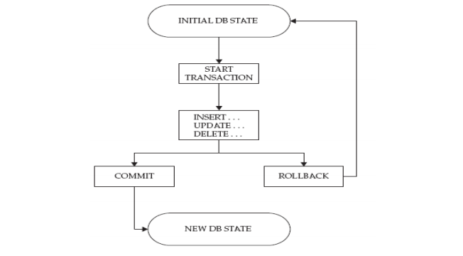
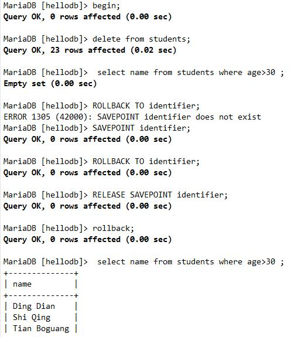
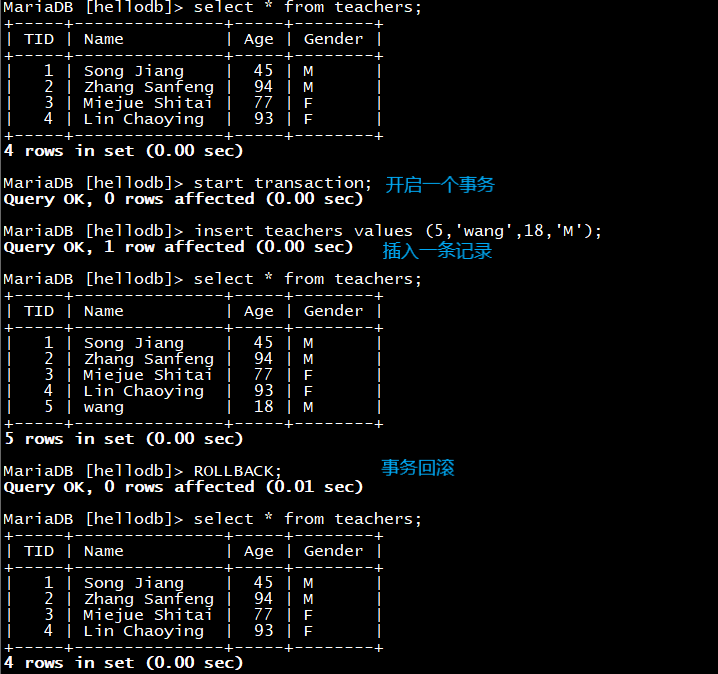
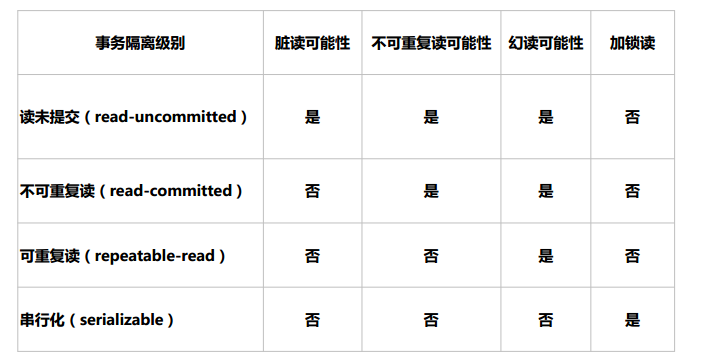
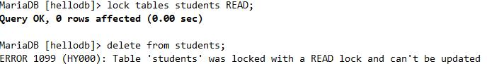
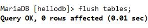
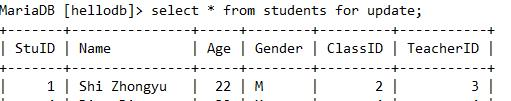
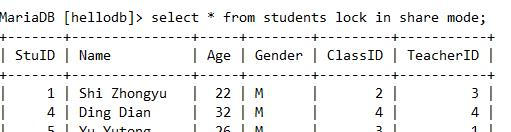
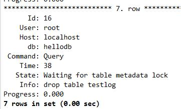
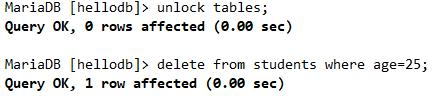

事务
事务Transactions：一组原子性的SQL语句，或一个独立工作单元。
事务主要用于处理操作量大，复杂度高的数据。比如说，在人员管理系统中，你删除一个
人员，你既需要删除人员的基本资料，也要删除和该人员相关的信息，如信箱，文章等等，
这样，这些数据库操作语句就构成一个事务
事务日志：记录事务信息，实现undo,redo等故障恢复功能
ACID特性：
A：atomicity原子性；
整个事务中的所有操作要么全部成功执行，要么全部失败后回滚，不可能停滞在中间某个环节。
C：consistency一致性；
数据库总是从一个一致性状态转换为另一个一致性状态
如果事务是并发多个，系统也必须如同串行事务一样操作。其主要特征是保护性和不变性(Preserving an Invariant)
假设有三个账户，每个账户余额是10元，那么三个账户总额是30元，如果在这个3个账户之间同时发生多个转账，无论并发多少个，比如在A与B账户之间转账5元，在b与c账户之间转账10元，三个账户总额也应该还是30元，这就是保护性和不变性
I：Isolation隔离性；
一个事务所做出的操作在提交之前，是不能为其它事务所见；隔离有多种隔离级别，实现并发。
如果有两个事务，运行在相同的时间内，执行相同的功能，事务的隔离性将确保每一事务在系统中认为只有该事务在使用系统。这种属性有时称为串行化，为了防止事务操作间的混淆，必须串行化或序列化请求，使得在同一时间仅有一个请求用于同一数据。
D：durability持久性；
一旦事务提交，其所做的修改会永久保存于数据库中

事务控制语句：
启动事务：
BEGIN 或 START TRANSACTION 显式地开启一个事务
结束事务：
COMMIT：提交
ROLLBACK: 回滚
注意：只有事务型存储引擎中的DML语句方能支持此类操作
自动提交：set autocommit={1|0} 默认为1，为0时设为非自动提交
建议：显式请求和提交事务，而不要使用“自动提交”功能
事务支持保存点：savepoint
需设置set autocommit=0
SAVEPOINT identifier #SAVEPOINT允许在事务中创建一个保存点，一个事务中可以有多个SAVEPOINT
ROLLBACK TO identifier 把事务回滚到标记点
RELEASE SAVEPOINT identifier 删除一个事务的保存点，当没有指定的保存点时，执行该语句会抛出一个异常

实现MySQL事务处理：
方法一：用 BEGIN, ROLLBACK, COMMIT来实现
BEGIN 开始一个事务
ROLLBACK 事务回滚
COMMIT 事务确认
方法二：直接用 SET 来改变 MySQL 的自动提交模式:
SET AUTOCOMMIT=OFF 禁止自动提交
SET AUTOCOMMIT=ON 开启自动提交（系统默认项）
示例：事务测试

事务隔离级别
事务并发问题：
1.脏读：事务A读取了事务B更新的数据，然后B回滚操作，那么A读取到的数据是脏数据
2、不可重复读：事务 A 多次读取同一数据，事务 B 在事务A多次读取的过程中，对数据作了更新并提交，导致事务A多次读取同一数据时，结果不一致。
3、幻读：系统管理员A将数据库中所有学生的成绩从具体分数改为ABCDE等级，但是系统管理员B就在这个时候插入了一条具体分数的记录，当系统管理员A改结束后发现还有一条记录没有改过来，就好像发生了幻觉一样，这就叫幻读。
小结：不可重复读的和幻读很容易混淆，不可重复读侧重于修改，幻读侧重于新增或删除。解决不可重复读的问题只需锁住满足条件的行，解决幻读需要锁表
在数据库操作中，为了有效保证并发读取数据的正确性，提出的事务隔离级别。
在标准SQL规范中，定义了4个事务隔离级别，不同的隔离级别对事务的处理不同。
从上至下更加严格：
READ UNCOMMITTED：可读取到未提交数据，产生脏读
READ COMMITTED：可读取到提交数据，但未提交数据不可读，产生不可重复读，即可读取到多个提交数据，导致每次读取数据不一致
REPEATABLE READ 可重复读，多次读取数据都一致，产生幻读，即读取过程中，即使有其它提交的事务修改数据，仍只能读取到未修改前的旧数据。此为MySQL默认设置
SERIALIZABILE 可串行化，未提交的读事务阻塞修改事务，或者未提交的修改事务阻塞读事务。导致并发性能差

MVCC-多版本的并发控制协议
MySQL InnoDB存储引擎，实现的是基于多版本的并发控制协议——MVCC(Multi-VersionConcurrency Control)，它使得大部分支持行锁的事务引擎，不再单纯的使用行锁来进行数据库的并发控制，取而代之的是把数据库的行锁与行的多个版本结合起来，只需要很小的开销,就可以实现非锁定读，从而大大提高数据库系统的并发性能
管理事务隔离级别：
查看事务隔离级别
show global variables like "%isolation%";
服务器变量tx_isolation指定，默认为REPEATABLE-READ，可在GLOBAL和SESSION级进行设置
SET tx_isolation=”
READ-UNCOMMITTED
READ-COMMITTED
REPEATABLE-READ
SERIALIZABLE
服务器选项中指定
vim /etc/my.cnf
[mysqld]
transaction-isolation=SERIALIZABLE
并发控制
锁粒度：
表级锁
行级锁
锁：
读锁：共享锁，只读不可写，多个读互不阻塞，
写锁：独占锁,排它锁，一个写锁会阻塞其它读和它锁
实现：
存储引擎：自行实现其锁策略和锁粒度
服务器级：实现了锁，表级锁；用户可显式请求
分类：
隐式锁：由存储引擎自动施加锁
显式锁：用户手动请求
锁策略：在锁粒度及数据安全性寻求的平衡机制
显示使用锁
LOCK TABLES tbl_name [[AS] alias] lock_type
lock_type: READ ， WRITE

FLUSH TABLES [tbl_name] [WITH READ LOCK] 关闭正在打开的表（清除查询缓存），通常在备份前加全局读锁

SELECT clause [FOR UPDATE | LOCK IN SHARE MODE] 查询时加写或读锁
1. select *** for update 的使用场景
为了让自己查到的数据确保是最新数据，并且查到后的数据只允许自己来修改的时候，需要用到 for update 子句。

2. select *** lock in share mode 使用场景
为了确保自己查到的数据没有被其他的事务正在修改，也就是说确保查到的数据是最新的数据，并且不允许其他人来修改数据。但是自己不一定能够修改数据，因为有可能其他的事务也对这些数据 使用了 in share mode 的方式上了 S 锁。

查看当前有那些表是打开的
show open tables
show OPEN TABLES where In_use > 0; 这个语句记录当前锁表状态
显示哪些线程正在运行,以及被锁的表
SHOW PROCESSLIST\G

show full processlist
mysqladmin processlist
然后 kill id
UNLOCK TABLES 解锁

读锁：
读锁也称为共享锁，读锁允许多个连接可以同一时刻并发的读取同一资源,互不干扰；
写锁：
写锁也称为排他锁，一个写锁会阻塞其他的写锁或读锁，保证同一时刻只有一个连接可以写入数据，同时防止其他用户对这个数据的读写。
死锁：
两个或多个事务在同一资源相互占用并请求锁定对方占用的资源的状态
如下所示：
事务1 事务2
update table1 update table2
update table2 update table1
产生死锁